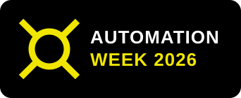
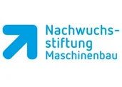
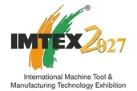

oct12lundi
ZOLLER Automation Week
Cinq jours d’automatisation en direct chez ZOLLER Inc. Pacific : »coraLogistic«, »coraVarion« et »loadBox« en démonstrations, conférences et entretiens individuels avec nos experts.

Lieux de rencontre du secteur
Venez assister à nos événements sur place ou en direct en ligne. Vous trouverez ici tous les thèmes et les dates.
Aucun événement n’est prévu dans ce pays pour le moment.
Cinq jours d’automatisation en direct chez ZOLLER Inc. Pacific : »coraLogistic«, »coraVarion« et »loadBox« en démonstrations, conférences et entretiens individuels avec nos experts.

Retrouvez ZOLLER au salon SIANE Industries et découvrez nos solutions sur place à Toulouse.

Les solutions ZOLLER au salon international de la machine-outil à Milan – rendez-nous visite.

Une Oktoberfest consacrée aux dernières technologies de fabrication – sous une tente de Biergarten traditionnelle, avec bretzels, saucisses et spécialités allemandes.
Une expérience technologique personnalisée en tête-à-tête au siège nord-américain de ZOLLER : démonstrations en direct de »micBox«, »roboBox«, »coraMeasure LG«, »coraVarion« et d’autres solutions connectées – adaptées à vos applications et objectifs de production.

Découvrez les solutions ZOLLER lors des portes ouvertes de BIMATEC SORALUCE à Limburg.
Ready for 4.0 : atelier sur la gestion des outils pour une fabrication intelligente. Découvrez en direct des solutions concrètes pour organiser efficacement vos outils dans une production connectée (en allemand).

Ready for 4.0 : atelier sur la gestion des outils pour une fabrication intelligente. Découvrez en direct des solutions concrètes pour organiser efficacement vos outils dans une production connectée (en allemand).

Découvrez les solutions ZOLLER au salon METALEX à Bangkok, le premier salon de la machine-outil et du travail des métaux de la zone ASEAN.
Ready for 4.0 : atelier sur la gestion des outils pour une fabrication intelligente. Découvrez en direct des solutions concrètes pour organiser efficacement vos outils dans une production connectée (en allemand).
Formation continue destinée aux enseignants sur les systèmes numériques de gestion des outils (en allemand).

Retrouvez ZOLLER à l’IMTEX 2027 à Bengaluru et découvrez nos solutions en direct.

Retrouvez ZOLLER au salon Intec à Leipzig et découvrez nos solutions pour gagner en efficacité.

Retrouvez ZOLLER au salon Global Industrie à Lyon et découvrez nos solutions en direct.

Retrouvez ZOLLER aux journées du tournage et de l’usinage DST à Villingen-Schwenningen et découvrez nos solutions sur place.
GrindingHub Americas présente à Cincinnati l’avenir de la rectification et de la finition – avec des démonstrations en direct, de la rectification de précision à la métrologie et à l’automatisation.
Retrouvez-nous au salon GIFA à Düsseldorf et découvrez nos solutions en direct.
Le salon entièrement dédié aux transformateurs de pierre – avec les outils, les technologies et les partenaires sur lesquels ils comptent au quotidien.